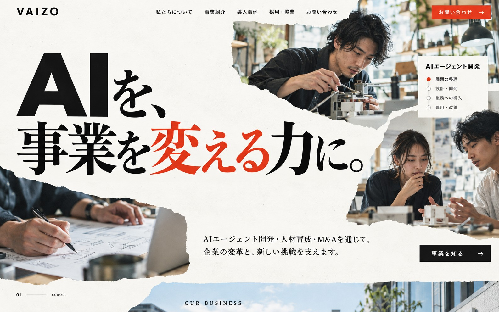

VAIZO
私たちについて
事業紹介
導入事例
採用・協業
お問い合わせ
お問い合わせ
→

AI
を、
事業
を
変
える
力
に
。
AIエージェント開発・人材育成・M&Aを通じて、
企業の変革と、新しい挑戦を支えます。
事業を知る
→
OUR BUSINESS
AIで、事業を
動かす。
事業を変える、3つの力。
01
AIエージェント＆
管理プラットフォーム開発
↗
02
AIディレクター育成
↗
03
AIバリューアップM&A
↗